| Name | Image | Rarity | Type | Cost | Description |
|---|
| Ceremony |  | Basic | Power | 2 | Ethereal. (not Ethereal.) Gain 1 Ritual. |
| Defend | 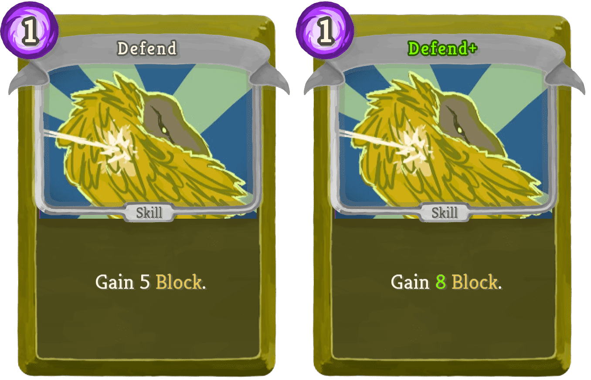 | Basic | Skill | 1 | Gain 5 (8) Block. |
| Strike |  | Basic | Attack | 1 | Deal 6 (9) damage. |
| Book's Flurry |  | Special | Skill | 0 | Deal 2 (3) (non-attack) damage for every card played this combat. |
| Head's Impatience |  | Special | Power | 0 | Whenever you play a card, gain 1 (2) Strength until the end of your turn. |
| Inspiration |  | Special | Skill | | Unplayable. When drawn, Exhaust this and draw 2 more cards. |
| Lagavulin's Ferocity |  | Special | Power | 0 | The first Attack you play each turn deals double (triple) damage. |
| Leader's Execution |  | Special | Attack | 0 | Deal 6 (8) damage 3 times. |
| Nemesis' Slickness |  | Special | Skill | 0 | Gain 1 Intangible.(Deal !D! damage to ALL enemies.) |
| Nob's Rage | 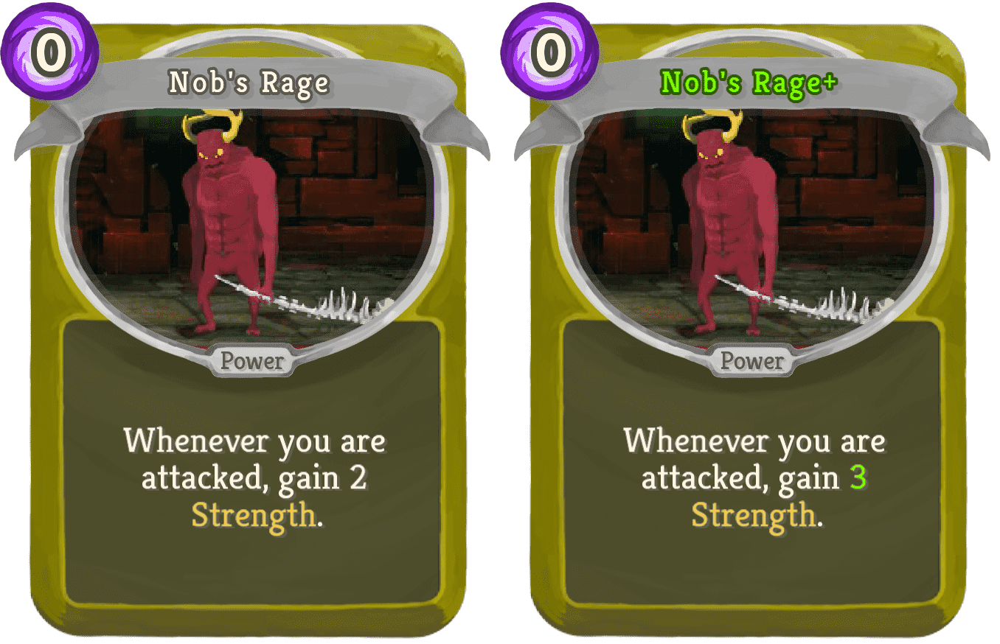 | Special | Power | 0 | Whenever you are attacked, gain 2 (3) Strength. |
| Psalm |  | Special | Attack | 0 | Deal 4 (6) damage to ALL enemies. beaked:Wither 2. |
| Reptomancer's Bite |  | Special | Skill | 0 | (Remove target's Artifact.)Apply 99 Weak. Apply 99 Vulnerable. |
| Sentry's Pulse |  | Special | Skill | 0 | Remove ALL Buffs from an enemy (ALL enemies). |
| Stick |  | Special | Skill | 0 | ALL Stick Smacks deal 1 (2) additional damage this combat. Return the last-played Stick Smack to your hand. |
| Taskmaster's Torture |  | Special | Attack | 0 | Deal 15 (20) damage. Apply 5 (8) beaked:Bleed. |
| Walker's Fury |  | Special | Power | 0 | Gain 3 (5) Ritual. |
| Brace |  | Common | Skill | 1 | Retain. Gain 0 Block. Block increases by 1 (2) for each card you play while this is in your hand. Exhaust. |
| Brace for Impact |  | Common | Skill | 0 | Gain 1 (2) beaked:Plated_Armor. |
| Cower |  | Common | Skill | 1 | Gain 1 Vulnerable. Apply 2 (3) Weak to ALL enemies. |
| Cursing Blood | 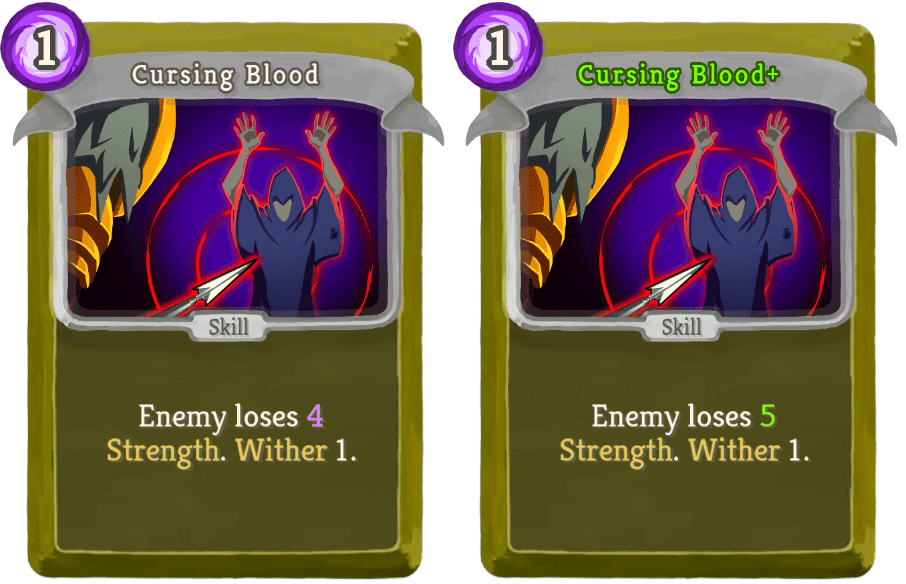 | Common | Skill | 1 | Enemy loses 4 (5) Strength. beaked:Wither 1. |
| Daydream | 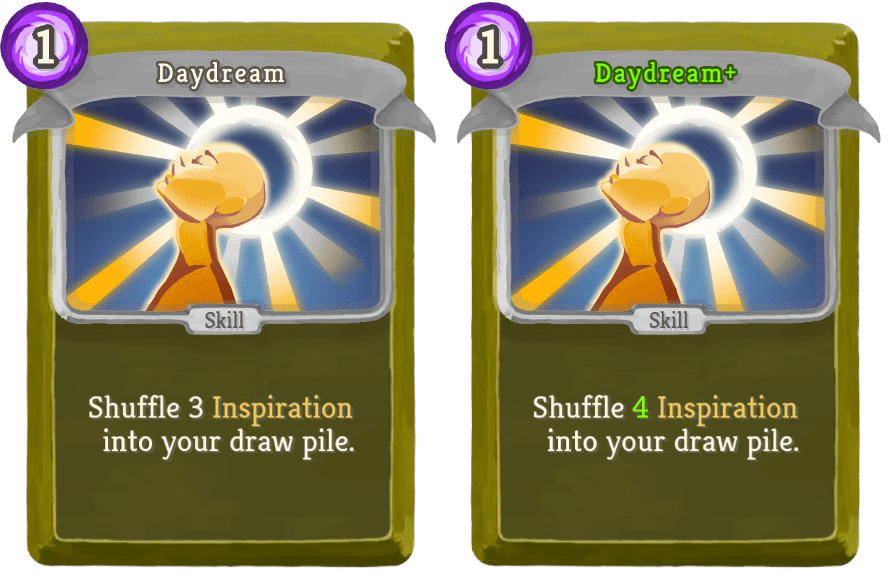 | Common | Skill | 1 | Shuffle 3 (4) Inspiration into your draw pile. |
| Dig Deep | 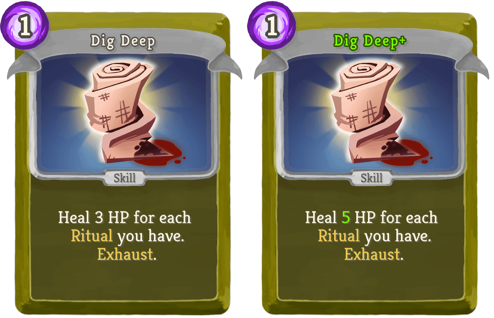 | Common | Skill | 1 | Heal 3 (5) HP for each Ritual you have. Exhaust. |
| Evade |  | Common | Skill | 1 (0) | If the enemy intends to attack, gain [E] [E]. |
| Feel My Pain | 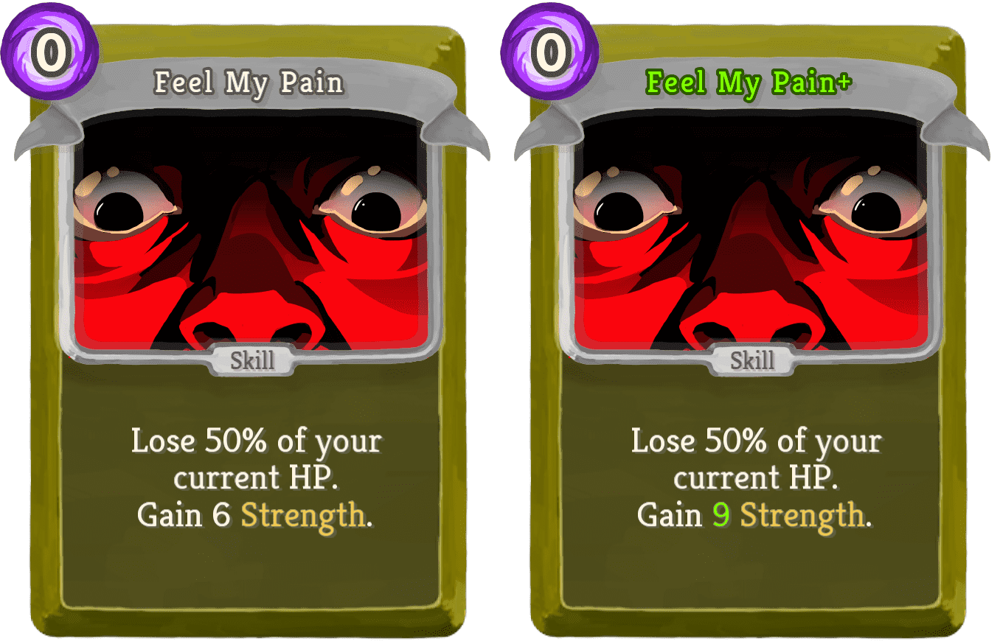 | Common | Skill | 0 | Lose 50% of your current HP. Gain 6 (9) Strength. |
| Flinch |  | Common | Skill | 1 | Gain 16 Block. beaked:Wither 2 (1). |
| Foresight |  | Common | Skill | 1 | Gain 5 (8) Block. Next turn, gain [E] ([E]). |
| Insight |  | Common | Power | 1 | (Innate.)At the start of your turn, shuffle an Inspiration into your draw pile. |
| Poke |  | Common | Attack | 1 | Draw 1 (2) card. If it's an Attack, deal 5 damage. |
| Redirect |  | Common | Skill | 1 (0) | Gain Block equal to 6 times your Strength, then lose all Strength. beaked:Wither 1. |
| Resilience |  | Common | Skill | 1 (0) | Lose 3 Strength. Lose 4 HP. Gain 2 Artifact. |
| Survival Instinct |  | Common | Skill | 2 (1) | Ethereal. Can only be played if you haven't played any other cards this turn. Gain 1 Intangible. Become beaked:Entangled. |
| Tradeoff | 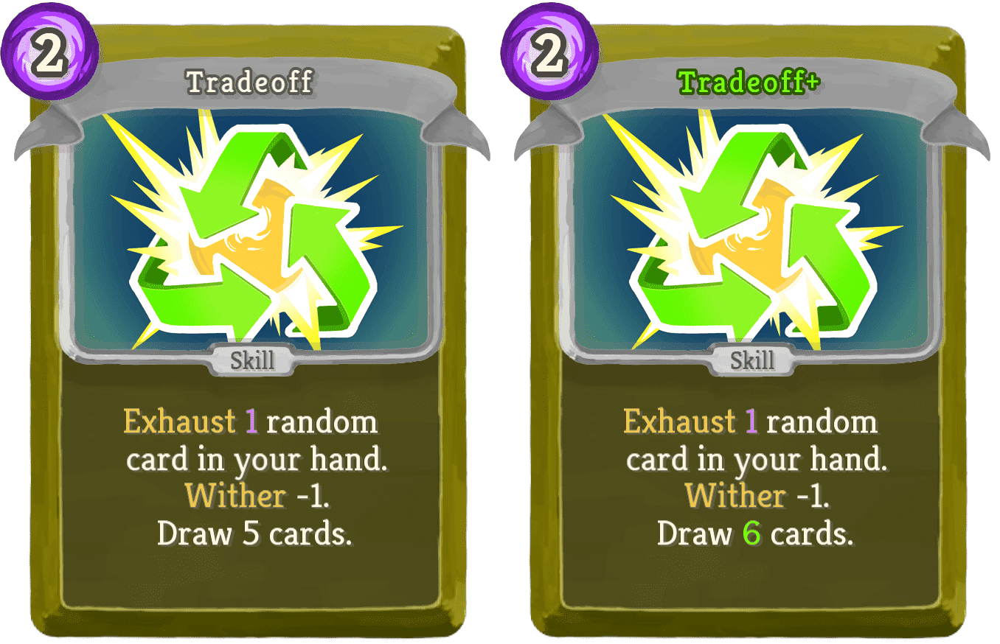 | Common | Skill | 2 | Exhaust 1 random card in your hand. beaked:Wither -1. Draw 5 (6) cards. |
| Tucking Feathers |  | Common | Skill | 1 | Draw 2 (3) cards. Gain Block equal to their total cost. |
| Tweet |  | Common | Skill | 0 | Apply 1 (2) Vulnerable. |
| Warrior Essence |  | Common | Attack | X | Deal 2 damage to a random enemy X (X+1) times. Heal for 25% of unblocked damage dealt. Exhaust. |
| Windmill |  | Common | Attack | 0 | Deal 3 damage. Whenever you play a Skill this turn, deal 6 (9) damage to a random enemy. |
| Barbed Wire |  | Uncommon | Skill | 2 (1) | Gain Thorns equal to your Strength. Lose all Strength. |
| Blood For The Gods |  | Uncommon | Skill | 2 | Take 10 (15) damage. Next turn, heal twice that much HP. |
| Blood Ritual | 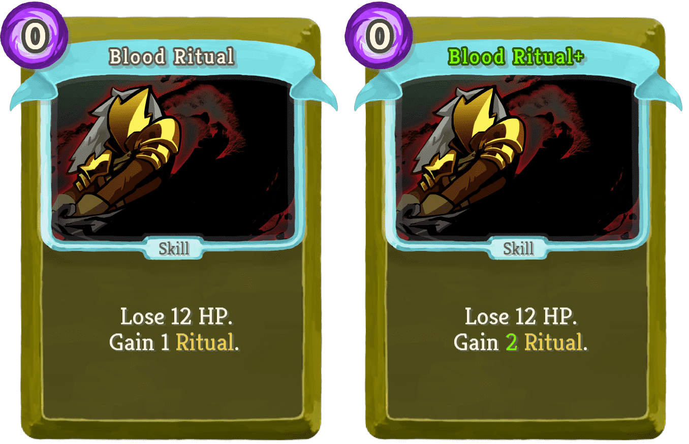 | Uncommon | Skill | 0 | Lose 12 HP. Gain 1 (2) Ritual. |
| Bounce Back |  | Uncommon | Skill | 2 (1) | Remove all of your Debuffs. Exhaust. |
| Crazy Rituals | 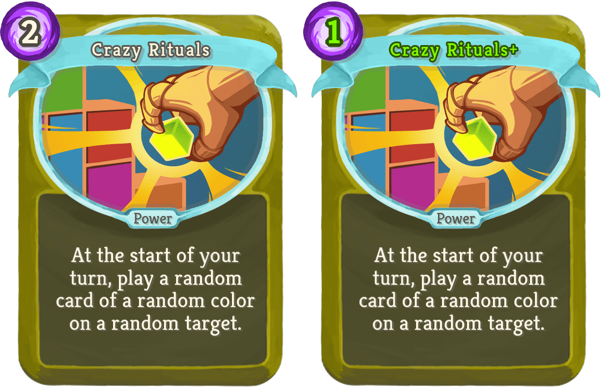 | Uncommon | Power | 2 (1) | At the start of your turn, play a random card of a random color on a random target. |
| Desperate Swing |  | Uncommon | Attack | 1 | Deal 9 damage. Deals 1 additional damage for every 5 (4) points of HP missing. |
| Devastation |  | Uncommon | Power | 1 | When you draw a beaked:Depleted card, draw 1 (2) more card(s). |
| Dig Deeper |  | Uncommon | Skill | 2 | Heal 1 HP for each Strength you have. Lose all Strength. Exhaust. (not Exhaust.) |
| Hexing |  | Uncommon | Power | 2 (1) | At the start of your turn, apply 2 Weak and 1 Vulnerable to all enemies that don't intend to attack. |
| Huntress Essence |  | Uncommon | Skill | 2 | Heal 1 (3) HP and draw 1 card for each card in your Exhaust pile. Exhaust. |
| Huntress Spirit |  | Uncommon | Skill | 1 | Your next Skill this turn is played twice. Gain Dexterity equal to (twice) its cost. Exhaust. |
| Machine Spirit | 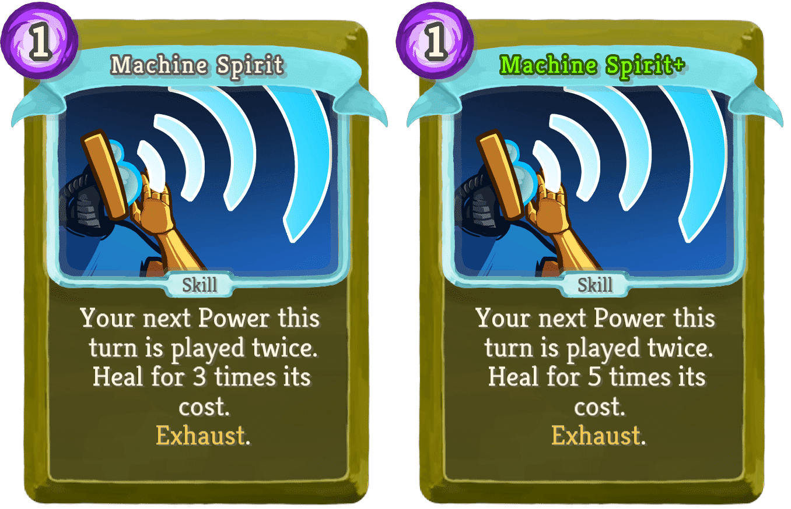 | Uncommon | Skill | 1 | Your next Power this turn is played twice. Heal for 3 (5) times its cost. Exhaust. |
| Maddening Murmurs |  | Uncommon | Power | 2 | At the start of your turn, place a random card from your discard pile into your hand. It costs 1 less (0) this turn. |
| Mantra |  | Uncommon | Attack | 2 | Deal 4 (5) damage for every beaked:Wither card in your deck. |
| Mimic Huntress |  | Uncommon | Skill | 1 | Add a random (Upgraded) Silent card to your hand. It costs 0 this turn. |
| Mimic Machine |  | Uncommon | Skill | 1 | Add a random (Upgraded) Defect card to your hand. It costs 0 this turn. |
| Mimic Warrior |  | Uncommon | Skill | 1 | Add a random (Upgraded) Ironclad card to your hand. It costs 0 this turn. |
| Molting |  | Uncommon | Skill | 1 | Exhaust a card. Gain 7 (10) Block, or 12 (15) Block if it was a beaked:Depleted card. |
| Negation |  | Uncommon | Skill | 1 | Ignore the next (!M!) beaked:Wither effect(s) this combat. Exhaust. |
| Overexert |  | Uncommon | Skill | 0 | Double your Energy. For each Energy gained, lose 3 (2) HP. |
| Overpower |  | Uncommon | Attack | 1 | Deal 9 damage. Deals 1 additional damage for every 5 (4) HP you currently have. |
| Pecker |  | Uncommon | Attack | 2 | Deal 1 damage 5 (7) times. beaked:Wither 1. |
| Recite |  | Uncommon | Skill | 2 | Add 2 (3) Psalms to your hand. |
| Replenish |  | Uncommon | Skill | 3 (2) | Replenish 1 use of a beaked:Wither card in your hand. |
| Ritual Of Body |  | Uncommon | Power | 2 | Spend 1 Ritual. Gain 1 (2) beaked:Plated_Armor at the start of each turn. |
| Roost |  | Uncommon | Skill | 0 | Gain 12 (16) Block. Increase this card's cost by 1 for the rest of combat. |
| Ruin Sticks |  | Uncommon | Attack | 1 | Deal 17 (20) damage. Add a Regret to your hand. |
| Sacrificial Attack |  | Uncommon | Attack | 2 | Deal 0 damage to ALL enemies. Strength affects Sacrificial Attack 2 (3) times. Lose all Strength. |
| Sacrificial Dive | 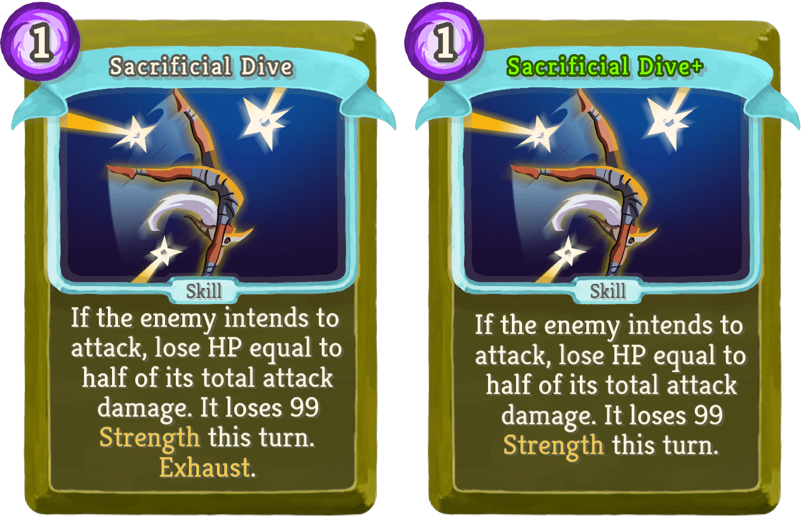 | Uncommon | Skill | 1 | If the enemy intends to attack, lose HP equal to half of its total attack damage. It loses 99 Strength this turn. Exhaust. (not Exhaust.) |
| Stick Smack |  | Uncommon | Attack | 1 | Deal 6 damage. Shuffle a (an Upgraded) Stick into your draw pile. |
| Struggle |  | Uncommon | Attack | 0 | Deal 4 (5) damage for each other card in your hand. End your turn. |
| Stunning Blow | 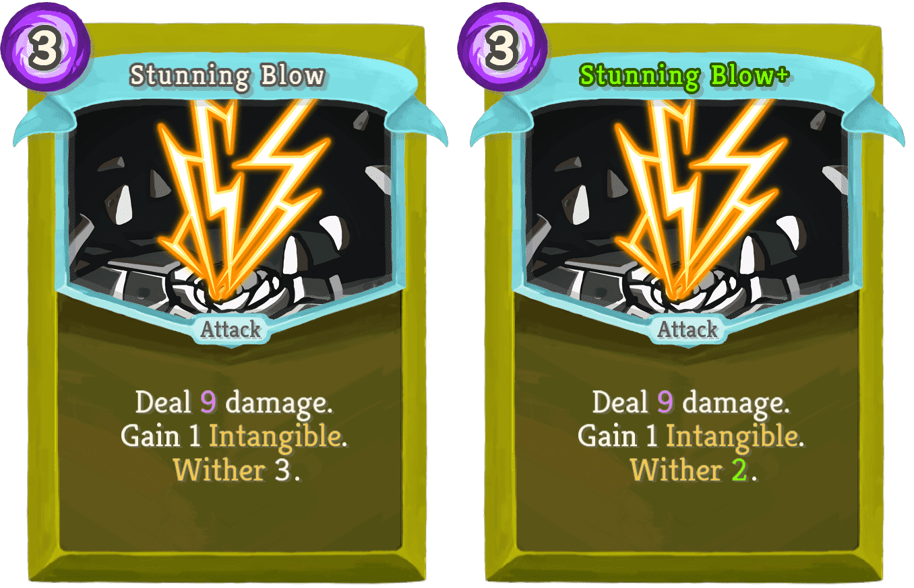 | Uncommon | Attack | 3 | Deal 9 damage. Gain 1 Intangible. beaked:Wither 3 (2). |
| Vigor Burst |  | Uncommon | Skill | | Unplayable. When drawn, heal 3 (5) HP. When added to your deck, gain 5 Max HP. If removed or transformed from your deck, lose 5 Max HP. (not If removed or transformed from your deck, lose 5 Max HP.) |
| Warrior Spirit | 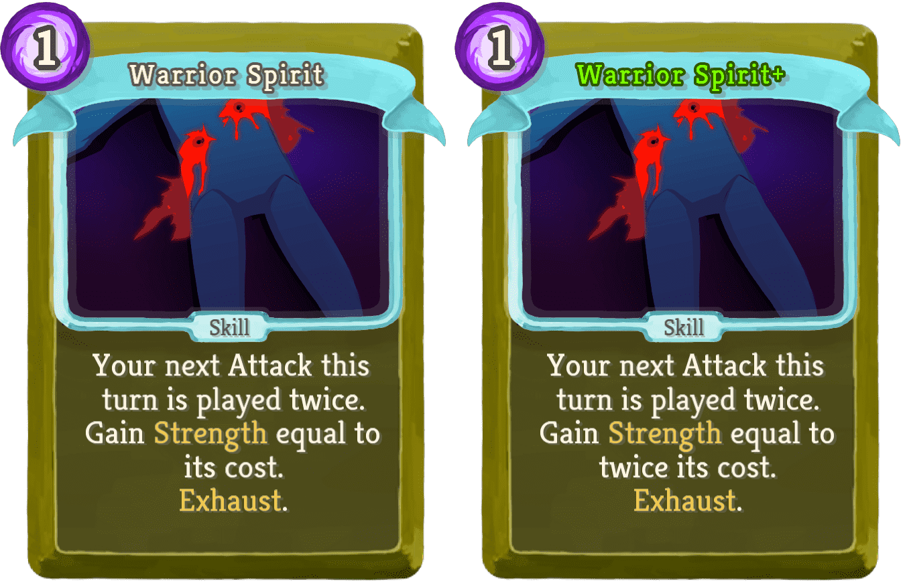 | Uncommon | Skill | 1 | Your next Attack this turn is played twice. Gain Strength equal to (twice) its cost. Exhaust. |
| Wind Bringer |  | Uncommon | Attack | 1 | Deal 16 damage to ALL enemies. beaked:Wither 2 (1). |
| Awakened Form |  | Rare | Power | 5 | Costs 1 less [E] for each Boss killed. Cards cost 1 less [E].(Can reduce costs below 0.) |
| Brainwash |  | Rare | Skill | 0 | (Retain.)Exhaust all beaked:Depleted cards in your hand. Retain your hand this turn. Exhaust. |
| CAW! | 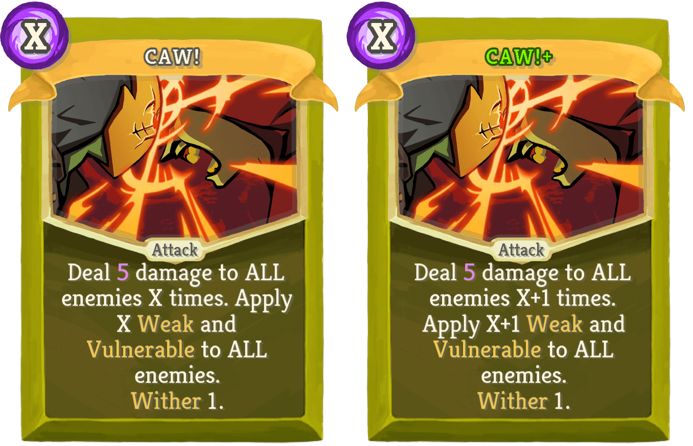 | Rare | Attack | X | Deal 5 damage to ALL enemies X (X+1) times. Apply X (X+1) Weak and Vulnerable to ALL enemies. beaked:Wither 1. |
| Dark Pact | 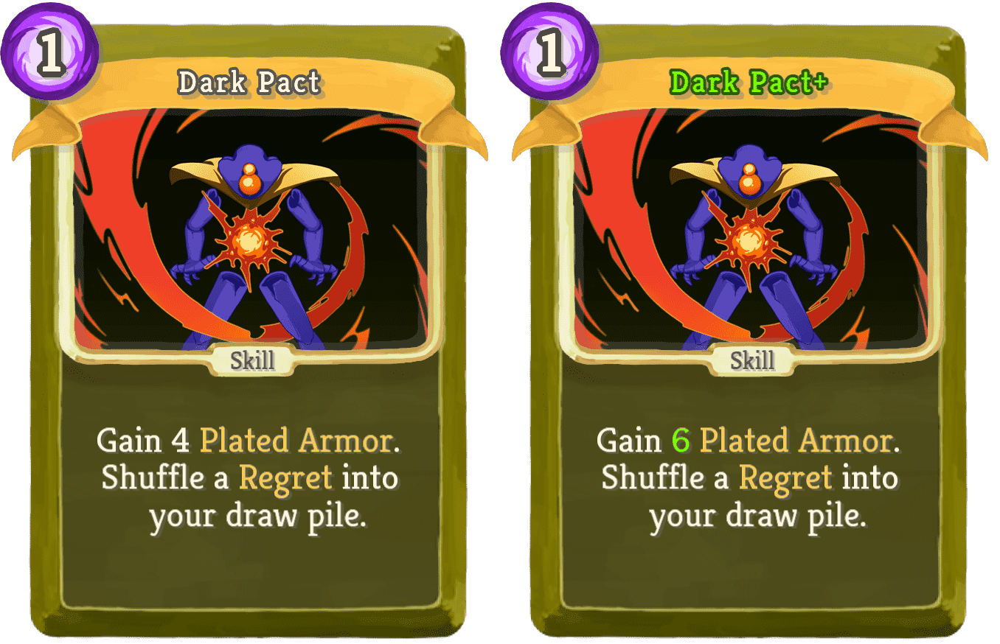 | Rare | Skill | 1 | Gain 4 (6) beaked:Plated_Armor. Shuffle a Regret into your draw pile. |
| Dark Tribute | 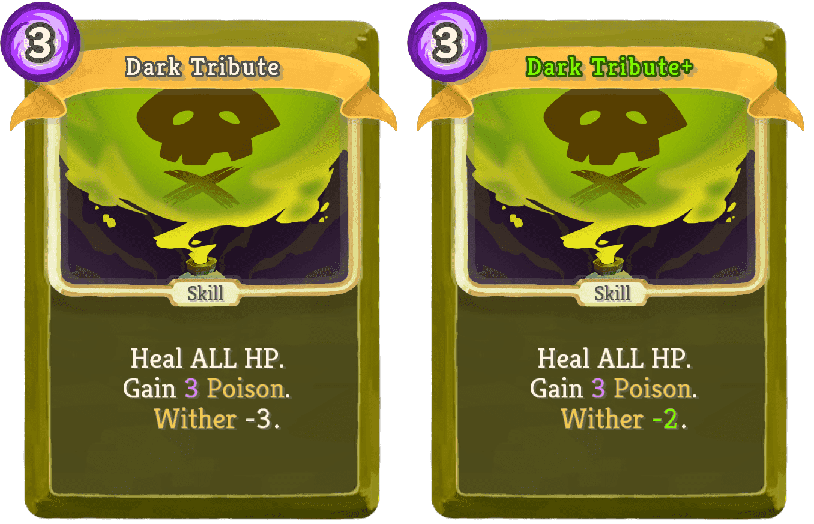 | Rare | Skill | 3 | Heal ALL HP. Gain 3 Poison. beaked:Wither -3 (-2). |
| Deep Focus |  | Rare | Power | 2 | Ignore the next 4 (5) beaked:Wither effects this combat. beaked:Wither 1. |
| Fake Out |  | Rare | Attack | 1 (0) | Deal 3 damage to ALL enemies. Swap your draw pile and discard pile. |
| Full House | 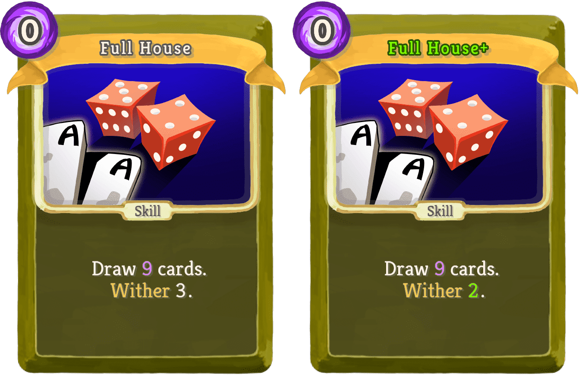 | Rare | Skill | 0 | Draw 9 cards. beaked:Wither 3 (2). |
| Know Thy Foe |  | Rare | Skill | 3 (2) | Add a random Elite card to your hand. Exhaust. |
| Lift Off |  | Rare | Power | 3 (2) | Take 50% less damage from attacks. If you are attacked 3 times in one turn, lose this power and skip your next turn. |
| Machine Essence |  | Rare | Power | 3 | Whenever you receive healing, heal an additional 1 (2) HP. |
| Sacrifice | 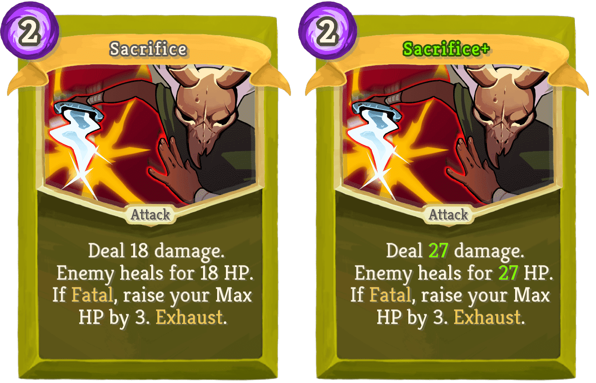 | Rare | Attack | 2 | Deal 18 (27) damage. Enemy heals for 18 (27) HP. If Fatal, raise your Max HP by 3. Exhaust. |
| Sacrificial Scars | 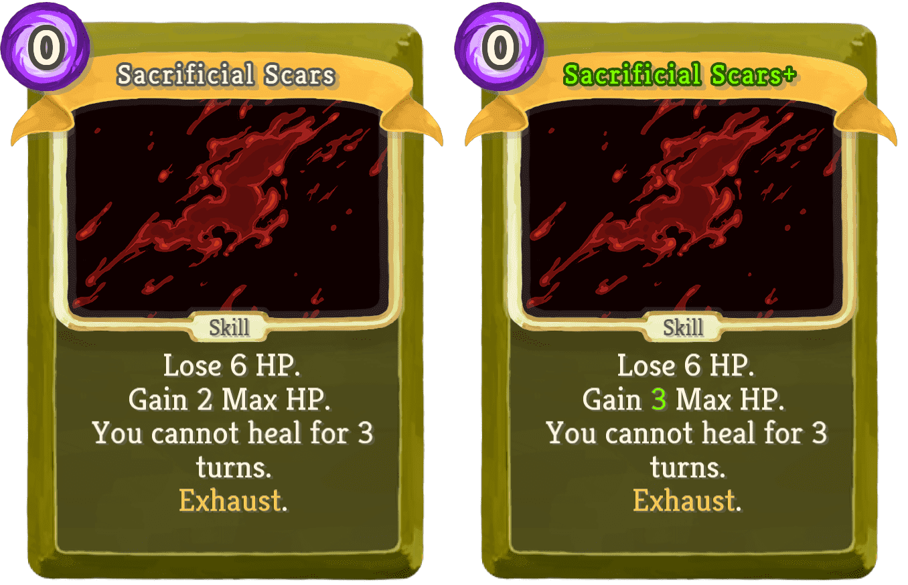 | Rare | Skill | 0 | Lose 6 HP. Gain 2 (3) Max HP. You cannot heal for 3 turns. Exhaust. |
| Screeching Chant |  | Rare | Skill | 3 (2) | Double your Ritual. Exhaust. |
| Shadow Fade | 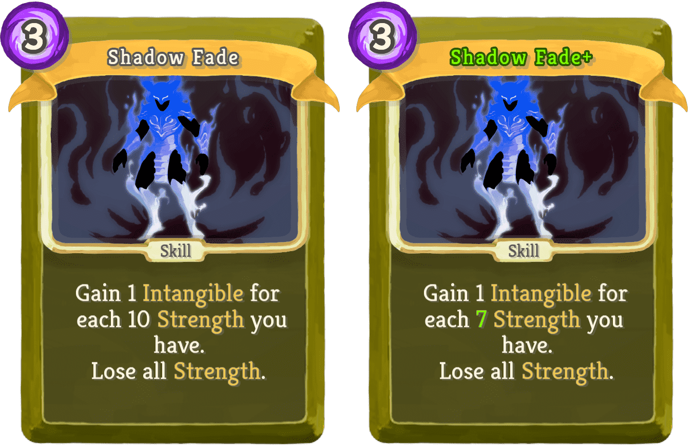 | Rare | Skill | 3 | Gain 1 Intangible for each 10 (7) Strength you have. Lose all Strength. |
| Volatile Misfortune |  | Rare | Power | 1 | (Innate.) At the end of your turn, Retain all Unplayable cards. For each, deal damage to a random enemy equal to your Strength + 1. |
| Wild Instinct |  | Rare | Attack | | Unplayable. If you have less than 50% HP when drawn, deal 20 (25) damage to ALL enemies. |
| Name | Image | Tier | Pool | Description | Flavor |
|---|
| Mending Plumage |  | Starter | Beaked_yellow | Whenever you play a card, heal 1 HP. | The Plumage merges with your feathers and makes you feel ... |
| Throat Lozenge |  | Common | Beaked_yellow | Ignore the first beaked:Wither effect each combat. | Soothing relief! Not for reuse. |
| Shiny Bauble |  | Uncommon | | Whenever you enter a Rest Site, start the next combat with 1Ritual. | You no take my shiny. |
| Blessed Coat | | Boss | Beaked_yellow | Replaces MendingPlumage. Upon playing a card, heal 1 HP. Every time you play 3 cards in a single turn, gain 1Regen. | A protective alternative to fur. |
| Flawless Sticks | 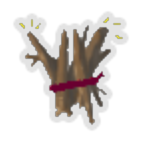 | Boss | Beaked_yellow | At the start of each combat, Exhaust all beaked:Depleted cards. | A bundle of surprisingly beautiful sticks. |
| Maw Fillet |  | Boss | | Gain [E] at the start of each turn. Shop spaces are replaced with Elite spaces. | The stench attracts the hungriest, repels the wealthiest. |
| Sacred Deck | | Boss | | Upon pick up, choose ANY card of any color to obtain. | Contains the deepest secrets of all who have entered the Spire. |
| Sacred Necklace | | Boss | | Super-Rare! Gain [E] at the start of each turn. | A sparkling trinket from an exotic land... |
| Sacrifice Doll |  | Boss | Beaked_yellow | On the first turn of each combat, play your entire hand on random targets at no cost. | This doll reminds you of a certain...robot. You feel as if it's always watching over you. |
| Ritual Plumage | | Shop | Beaked_yellow | If you end your turn without playing any cards, gain 2Ritual. Only works once per combat. | The Strength of a Demon courses through you. |
{kind=link}
{kind=link}
{kind=link}
{kind=link}
{kind=link}
{kind=link}
{kind=link}
{kind=link}
{kind=link}
{kind=link}
{kind=link}
{kind=link}
{kind=link}
{kind=link}
{kind=link}
{kind=link}
{kind=link}
{kind=link}
{kind=link}
{kind=link}